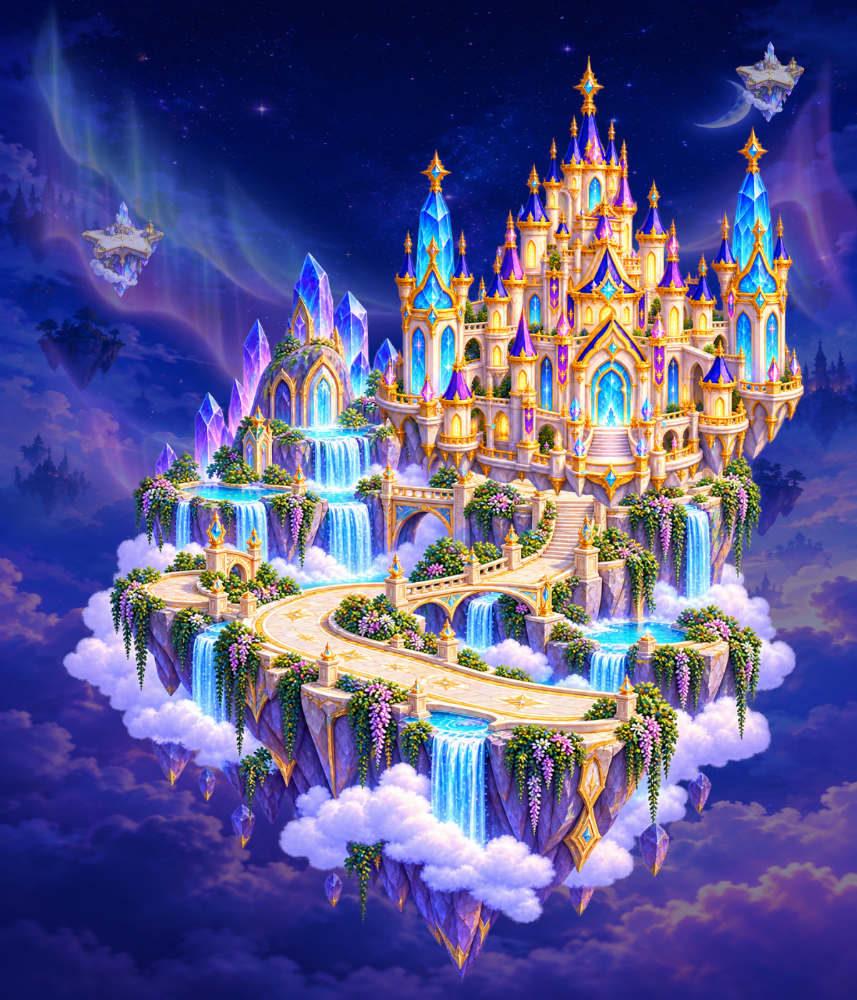
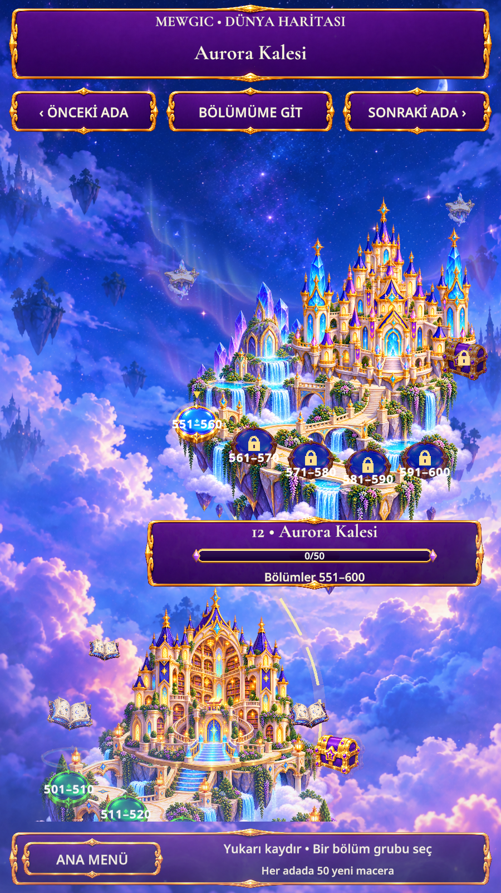

Gerçek proje referansı ve gerçek Unity çıktıları. Ayrı görkemli kristal kale, dev kristal kuleli çok teraslı taban, göksel şelaleler, mavi/pembe/mor aurora ve2 küçük yıldız adacığı. İlk kale kadrajına daha fazla saydam boşluk eklendi; sağ adacık kule ucundan ayrıldı.


Altın/mor kale, mavi kristal kapı, uzun şelaleler, ışıklı köprü ve bulut derinliği referansın yumuşak3D diliyle karşılaştırıldı. Aurora düşük alpha, yalnız4 küçük yeni kozmik yıldız vardır. Yeni tam ekran bloom/parçacık fırtınası yoktur. Su/ışık maskeli2D geçiştir; nötr köpüğün bazı pikselleri statiktir. Düğümler ve sandık gerçek bağımsız UI; mevcut beş onluk grup düzeni korunur. İsim plakası alt kayayı kısmen örter, büyük önizleme tüm silueti gösterir.
9:19.5 · 9:20 + Safe Area · 599→600 · 600→601 · 601→602 · 601+ sanatı bekleyen gerçek devam haritası · Teknik rapor